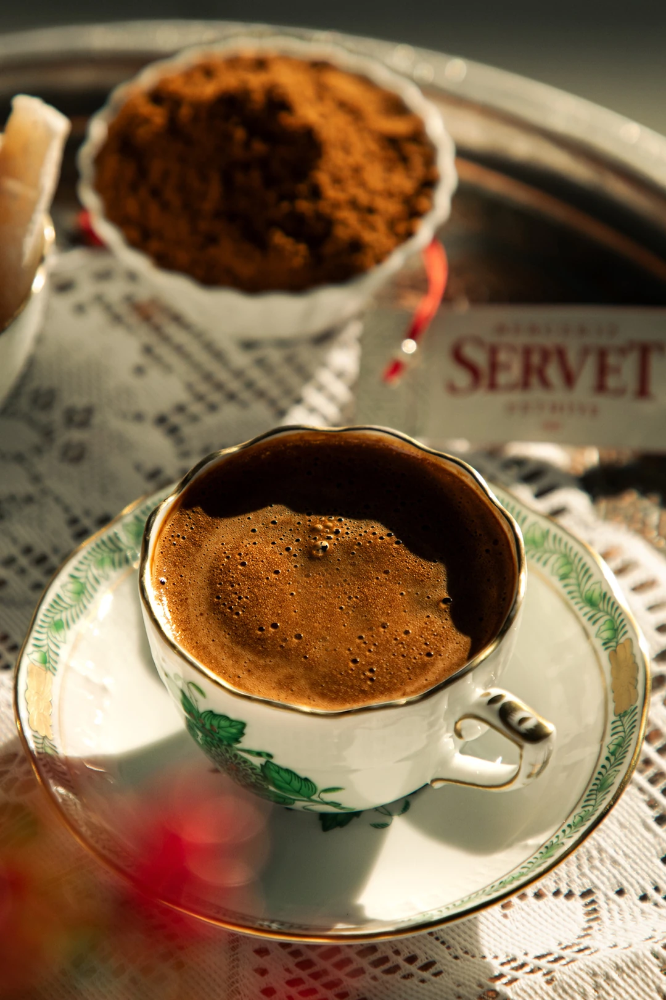
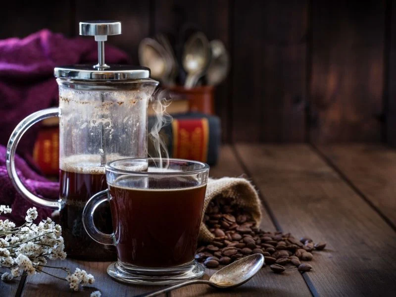

Türk kahvesi yapmak için şu adımları izleyebilirsiniz: Malzemeler: 1 fincan su (soğuk) 1 tatlı kaşığı Türk kahvesi İsteğe bağlı şeker (şekersiz, az şekerli, orta şekerli, şekerli) Hazırlık: Cezveye 1 fincan suyu dökün. Üzerine 1 tatlı kaşığı Türk kahvesini ekleyin. İsteğe bağlı olarak şeker ekleyin (az şekerli için yarım çay kaşığı, orta şekerli için 1 çay kaşığı, şekerli için 2 çay kaşığı). Karıştırma: Kahve ve suyu iyice karıştırın. Kısık ateşe alın ve kaynamaya bırakın. Kahve köpürdükçe köpükleri fincana alın. Pişirme: Kahve kaynamaya başladığında taşmadan cezveyi ocaktan alın ve kahveyi fincana dökün. Afiyet olsun!
Filtre kahve yapımı oldukça basit ve birkaç adımda gerçekleştirilebilir. İşte filtre kahve hazırlamanın temel adımları: 1. Malzemeler: Filtre kahve (taze çekilmiş olması tercih edilir) Su (içme suyu kullanılması önerilir) Filtre kahve makinesi, pour-over (V60, Chemex vb.) veya French press Filtre kağıdı (pour-over veya makine kullanıyorsanız) 2. Hazırlık: Filtre kahve makinesi: Makinenize uygun filtre kağıdını yerleştirin. Pour-over yönteminde: Filtre kağıdını süzgece yerleştirip sıcak suyla yıkayın (kağıt kokusunu almak için). French press kullanıyorsanız: French press'i temizleyin ve sıcak suyla ısıtın. 3. Kahve ve Su Miktarı: Kahve ve su oranı genelde 1:15 veya 1:16'dır. Yani, 1 gram kahveye 15-16 gram su. Örneğin: 1 fincan kahve için: Yaklaşık 1 yemek kaşığı (7-10 gram) kahveye 150-180 ml sıcak su ekleyebilirsiniz. 4. Su Isıtma: Su kaynamaya başladığında yaklaşık 92-96 °C’ye düşmesini bekleyin. Aşırı sıcak su kahveyi yakabilir, ideal sıcaklık bu aralıktadır. 5. Demleme: Filtre kahve makinesi: Makineyi çalıştırın, su otomatik olarak kahvenin üzerinden geçecektir. Pour-over (V60, Chemex): Yavaş yavaş dairesel hareketlerle suyu kahvenin üzerine dökün. İlk döküşte kahveyi "çiçeklenmesi" (bloom) için 30 saniye kadar bekleyin, sonra kalan suyu dökün. French press: Öğütülmüş kahveyi French press’e ekleyin, suyu üzerine dökün. 4 dakika demlemeye bırakın, ardından pistonu yavaşça bastırarak kahveyi süzün. 6. Servis: Kahveniz demlendikten sonra hemen bir fincana döküp afiyetle içebilirsiniz. İyi demlenmiş bir filtre kahve, temiz ve zengin bir tat sunar.
Makinesiz Espresso Yapımı (Alternatif Yöntemler): a) Moka Pot ile Espresso Benzeri Kahve: Gereken Malzemeler: Moka pot İnce çekilmiş kahve (Espresso öğütümüne yakın) Su Adımlar: Moka potun alt haznesine su koyun (valfin hemen altına kadar). Orta hazneye ince öğütülmüş kahveyi yerleştirin, fakat sıkıştırmadan. Moka potun üst kısmını kapatın ve düşük ateşte ocakta ısıtın. Kahve kaynamaya başlayınca üst hazneye toplanacak, bu espressoya yakın bir yoğunlukta kahve verecektir.